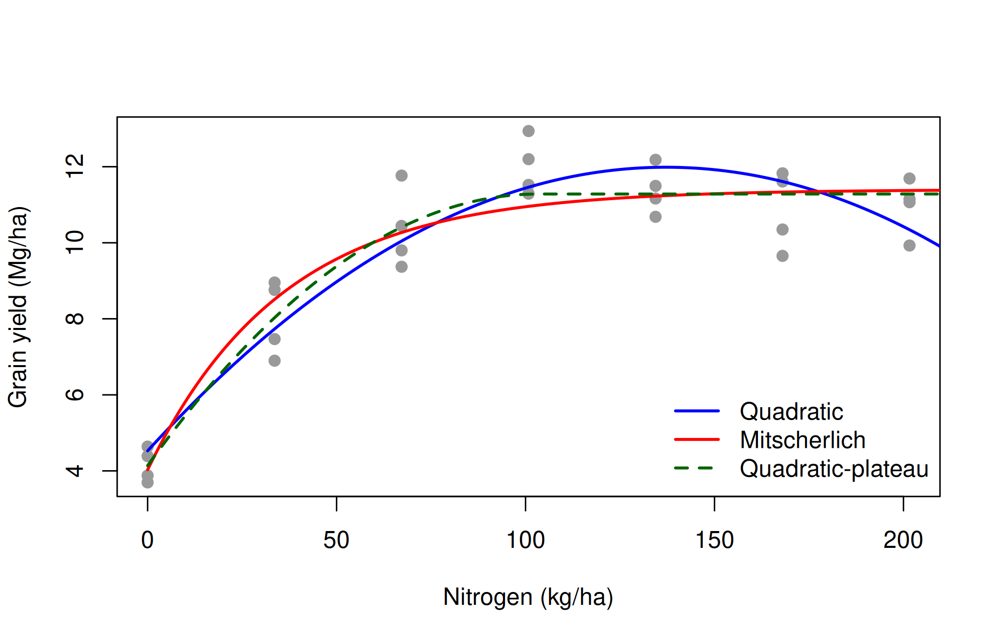
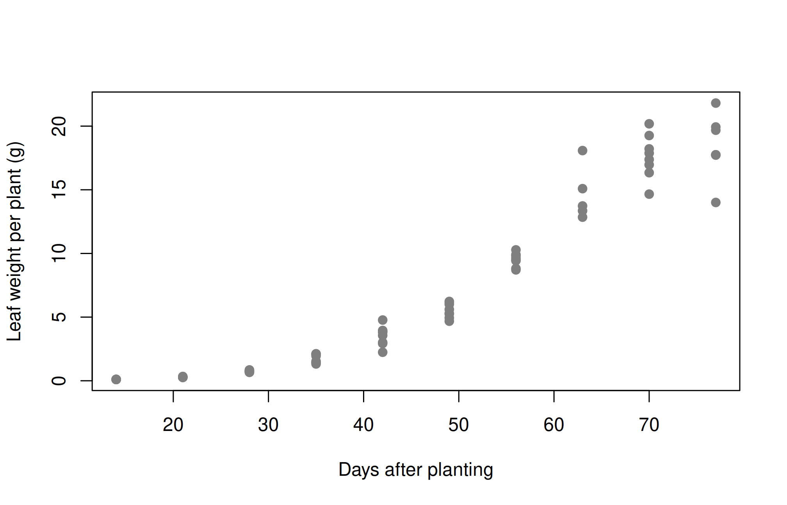

Distinguish linear and non-linear models, fit Mitscherlich, quadratic-plateau, logistic and Gompertz models with nls(), interpret their parameters, compare models and find optimum fertiliser doses.
Many biological relationships are not straight lines. Crop yield rises with fertiliser and then levels off; plant biomass grows slowly, then rapidly, then approaches a ceiling; pest populations, enzyme reactions and drying curves all follow characteristic curves. This chapter shows how to fit such curves.
30.1 Linear and non-linear models
A model is linear if it is linear in its parameters, even if it is curved in \(x\). The quadratic
\[y = \beta_0 + \beta_1 x + \beta_2 x^2 + e\]
is a linear model and is fitted with lm() (Chapter 26). Some models become linear after a transformation, e.g. \(y = a x^b\) becomes \(\log y = \log a + b \log x\).
A model is non-linear if it cannot be written in linear form, for example the asymptotic (Mitscherlich) model
Non-linear models are fitted by non-linear least squares, which minimises the residual sum of squares iteratively, starting from initial guesses of the parameters. In R this is done with nls().
Non-linear models have important advantages: their parameters usually have a direct biological meaning (maximum yield, growth rate, time of maximum growth), and they behave sensibly outside the range of the data (an asymptote rather than a parabola turning down).
30.2 Common non-linear models in agriculture
Model
Equation
Parameters
Typical use
Exponential growth
\(y = a\,e^{bx}\)
\(a\) initial value, \(b\) relative growth rate
early growth, population growth
Mitscherlich (monomolecular, asymptotic)
\(y = \alpha - (\alpha - \beta)e^{-\gamma x}\)
\(\alpha\) asymptote, \(\beta\) value at \(x = 0\), \(\gamma\) rate
fertiliser response
Logistic
\(y = \dfrac{\alpha}{1 + e^{(x_{mid} - x)/s}}\)
\(\alpha\) asymptote, \(x_{mid}\) inflection point, \(s\) scale
growth curves, disease progress
Gompertz
\(y = \alpha\,e^{-\beta e^{-\gamma x}}\)
\(\alpha\) asymptote
growth curves, asymmetric S-shape
Michaelis–Menten
\(y = \dfrac{V_m x}{K + x}\)
\(V_m\) maximum, \(K\) half-saturation constant
enzyme kinetics, nutrient uptake
Quadratic-plateau
quadratic up to \(x_0\), constant after
\(x_0\) critical level
fertiliser response
30.3 Self-starting models
The most difficult part of fitting a non-linear model is choosing starting values. R provides self-starting models that compute good starting values automatically:
A trial at five sites in Minnesota, USA, in 2006 measured the grain yield (Mg/ha) of maize at seven nitrogen rates (0 to 201.6 kg N/ha) with four replications (hernandez.nitrogen in agridat). We analyse site S1.
library(agridat)s1 <-subset(hernandez.nitrogen, site =="S1")aggregate(yield ~ nitro, data = s1, FUN = mean)
b <-coef(quad)N_max_quad <--b[2] / (2* b[3]) # dy/dN = 0N_max_quad
nitro
137.2
The fitted parabola reaches its maximum at 137 kg N/ha.
30.4.2 Mitscherlich (asymptotic) model
mitsch <-nls(yield ~SSasymp(nitro, Asym, R0, lrc), data = s1)summary(mitsch)
Formula: yield ~ SSasymp(nitro, Asym, R0, lrc)
Parameters:
Estimate Std. Error t value Pr(>|t|)
Asym 11.402 0.292 39.11 < 2e-16 ***
R0 4.029 0.460 8.75 0.0000000044 ***
lrc -3.580 0.182 -19.64 < 2e-16 ***
---
Signif. codes: 0 '***' 0.001 '**' 0.01 '*' 0.05 '.' 0.1 ' ' 1
Residual standard error: 0.928 on 25 degrees of freedom
Number of iterations to convergence: 0
Achieved convergence tolerance: 0.00000408
The estimated maximum attainable yield is 11.4 Mg/ha, the yield without nitrogen 4.03 Mg/ha, and the rate constant is \(\gamma = e^{\text{lrc}}\) = 0.0279 per kg N.
The quadratic-plateau model assumes a quadratic response up to a critical nitrogen rate \(x_0 = -b/(2c)\) (the vertex of the parabola) and a constant yield beyond it. It is fitted with nls(), giving starting values taken from the quadratic fit:
qp <-nls(yield ~ifelse(nitro <-b / (2* c), a + b * nitro + c * nitro^2, a - b^2/ (4* c)),data = s1, start =list(a =4, b =0.1, c =-0.0004))summary(qp)$coefficients
Estimate Std. Error t value Pr(>|t|)
a 4.1389123 0.4094632 10.108 0.000000000258
b 0.1382913 0.0185798 7.443 0.000000085327
c -0.0006693 0.0001605 -4.169 0.000320414979
nn <-data.frame(nitro =seq(0, 210, length.out =200))plot(yield ~ nitro, data = s1, pch =19, col ="grey60",xlab ="Nitrogen (kg/ha)", ylab ="Grain yield (Mg/ha)")lines(nn$nitro, predict(quad, nn), col ="blue", lwd =2)lines(nn$nitro, predict(mitsch, nn), col ="red", lwd =2)lines(nn$nitro, predict(qp, nn), col ="darkgreen", lwd =2, lty =2)legend("bottomright", c("Quadratic", "Mitscherlich", "Quadratic-plateau"),col =c("blue", "red", "darkgreen"), lty =c(1, 1, 2), lwd =2, bty ="n")

The quadratic-plateau model has the lowest AIC for these data. The three models agree closely within the range of the data but imply different optimum rates, which is why the choice of model matters for fertiliser recommendations.
30.4.5 Economic optimum dose
The economic optimum is the rate at which the extra yield from one more kilogram of nitrogen just pays for it, i.e. where the slope of the response curve equals the price ratio
\[\frac{dy}{dN} = \frac{\text{price of 1 kg N}}{\text{price of 1 unit of grain}}\]
For the quadratic model \(dy/dN = b_1 + 2b_2N\), so \(N_{\text{econ}} = (r - b_1)/(2b_2)\). Suppose 1 kg of N costs as much as 6 kg of grain, so \(r\) = 0.006 Mg grain per kg N:
r <-0.006N_econ_quad <- (r - b[2]) / (2* b[3])N_econ_quad
The economic optimum is about 130 kg N/ha with the quadratic model and 127 kg N/ha with the Mitscherlich model, both below the 137 kg N/ha that maximises the quadratic yield. The Mitscherlich curve never reaches a maximum, so only an economic optimum can be defined for it.
30.5 Example 30.2: a logistic growth curve
The growth of soybean plants was followed by sampling plants every week and recording the average leaf weight per plant (g) (davidian.soybean in agridat). We fit a logistic curve to the 1988 data for the variety Forrest (F):
soy <-subset(davidian.soybean, year ==1988& variety =="F")plot(weight ~ day, data = soy, pch =19, col ="grey50",xlab ="Days after planting", ylab ="Leaf weight per plant (g)")

logis <-nls(weight ~SSlogis(day, Asym, xmid, scal), data = soy)summary(logis)
Formula: weight ~ SSlogis(day, Asym, xmid, scal)
Parameters:
Estimate Std. Error t value Pr(>|t|)
Asym 20.471 0.733 27.9 <2e-16 ***
xmid 56.462 0.922 61.2 <2e-16 ***
scal 8.291 0.584 14.2 <2e-16 ***
---
Signif. codes: 0 '***' 0.001 '**' 0.01 '*' 0.05 '.' 0.1 ' ' 1
Residual standard error: 1.14 on 73 degrees of freedom
Number of iterations to convergence: 4
Achieved convergence tolerance: 0.00000636
Interpretation of the parameters:
Asym = 20.5 g: the final (asymptotic) leaf weight per plant;
xmid = 56.5 days: the inflection point, when growth is fastest and the plant has reached half of its final weight;
scal = 8.29 days: the time scale; the maximum absolute growth rate is \(\text{Asym}/(4 \times \text{scal})\) = 0.62 g per day.
A Gompertz curve, which is asymmetric about its inflection point, can be compared:
gomp <-nls(weight ~SSgompertz(day, Asym, b2, b3), data = soy)AIC(logis, gomp)
df AIC
logis 4 240.3
gomp 4 254.1
The logistic curve has the clearly lower AIC and fits these data better.
dd <-data.frame(day =seq(14, 84, length.out =200))plot(weight ~ day, data = soy, pch =19, col ="grey60",xlab ="Days after planting", ylab ="Leaf weight per plant (g)")lines(dd$day, predict(logis, dd), col ="red", lwd =2)lines(dd$day, predict(gomp, dd), col ="blue", lwd =2, lty =2)legend("topleft", c("Logistic", "Gompertz"), col =c("red", "blue"),lty =c(1, 2), lwd =2, bty ="n")
The spread of the residuals increases with the fitted value. In such cases a model on the log scale or weighted least squares (argument weights in nls()) may be more appropriate. Because measurements on the same plot over time are correlated, a full analysis of these data would use a non-linear mixed model (nlme::nlme()), with random effects for plots.
Tip
When nls() fails to converge: plot the data and check that the starting values are sensible; use a self-starting model if one exists; rescale variables with very large or very small values; or try algorithm = "port" with lower and upper bounds on the parameters.
30.6 Live R laboratory
Nitrogen response of maize
Edit the code, then select Run R. The first run downloads R into your browser and may take a little time. Copy code lets you use the example in RStudio.
Investigate. Compute the economic optimum of the quadratic model when 1 kg N costs as much as 6 kg of grain: \(N = (0.006 - b_1)/(2b_2)\).
30.7 Practical 32 and exercises
Fit the Mitscherlich and quadratic-plateau models to site S5 of hernandez.nitrogen. Compare the optimum nitrogen rates with those for site S1.
Fit a logistic curve to the 1988 data for the variety P in davidian.soybean. Do the two varieties differ in final leaf weight?
The built-in Puromycin data give the reaction velocity of an enzyme at different substrate concentrations. Fit a Michaelis–Menten model with SSmicmen() to the treated cells.
The built-in Loblolly data give the heights of loblolly pine trees by age. Fit an asymptotic model to tree 301.
Historical Insights
Eilhard Alfred Mitscherlich formulated his law of diminishing returns to fertiliser in 1909, describing the yield response as an exponential approach to a maximum.
30.8 Chapter Summary
Fill in the blanks
Answers are given at the end of the chapter.
A model is linear if it is linear in its __________.
Non-linear models are fitted by non-linear least squares with __________.
Self-starting models compute the __________ values automatically.
The Mitscherlich model approaches an __________ as the dose increases.
In the logistic model, xmid is the time of the __________ point.
Models of different forms are compared using the __________.
The economic optimum dose is where the slope of the response curve equals the __________ ratio.
The quadratic-plateau model has a constant yield beyond the __________ dose.
Short-answer questions
Distinguish between linear and non-linear models with examples.
Interpret the parameters of the Mitscherlich model.
Why do the quadratic and Mitscherlich models give different optimum doses?
What is the economic optimum dose?
What can be done when nls() does not converge?
Numerical and conceptual questions
Answers are given at the end of the chapter.
A logistic curve has Asym = 20.47 g and scal = 8.29 days. Find the maximum growth rate.
A quadratic response has \(b_1 = 0.1087\) and \(b_2 = -0.000396\). Find the dose for maximum yield.
If 1 kg N costs as much as 6 kg grain (\(r = 0.006\) Mg/kg), find the economic optimum.
Important formulae
Mitscherlich (asymptotic) model:
\[
y = \alpha - (\alpha - \beta)e^{-\gamma x}
\tag{30.1}\]